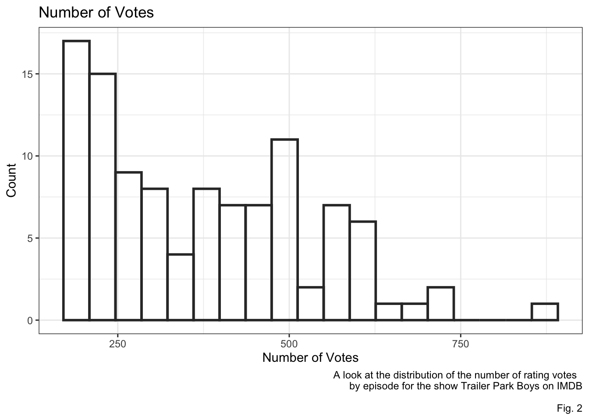
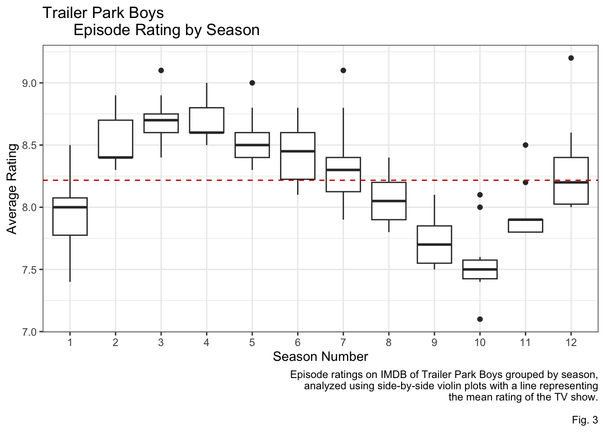
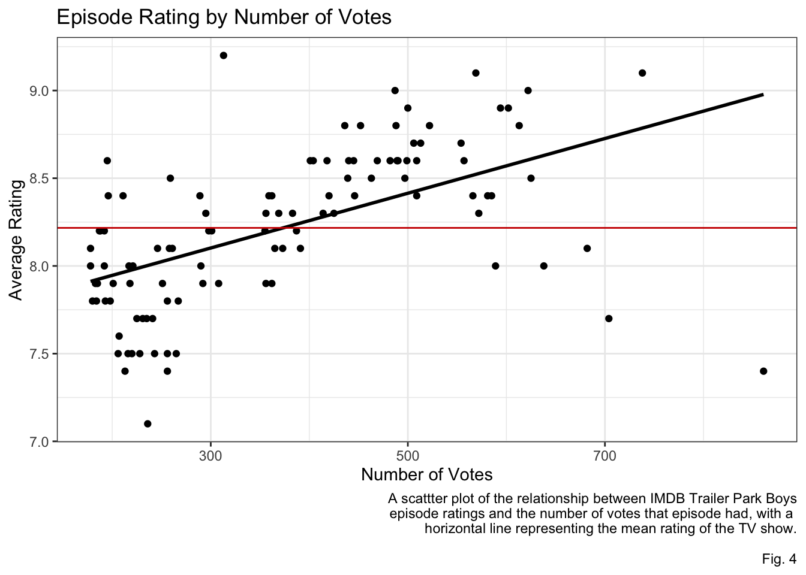

Warning: Using `size` aesthetic for lines was deprecated in ggplot2 3.4.0.
ℹ Please use `linewidth` instead.Analysis of IMDB Ratings in “Trailer Park Boys”
Inroduction
“Trailer Park Boys” is a Canadian mockumentary TV show based in the fictional Sunnyvale Trailer Park. The show ran for eight years on Showcase and was then purchased by Netflix where it ran another four seasons. In total it has run twelve seasons, totaling 106 episodes and has an average IMDB episode rating of 8.22 over that span. Data comes from IMDB and the variables of interest are the episode number, the season number, the average rating of each episode, and the number of ratings votes each episode got.
Analysis
The distribution of Episode ratings in “Trailer Park Boys” appears to be normal as can be seen in Fig. 1. People tend to rate the episodes fairly high and the majority of the reviews are withing .6 of each other on the 10 point rating scale.
| Min. | 1st Qu. | Median | Mean | 3rd Qu. | Max. |
|---|---|---|---|---|---|
| 7.1 | 7.9 | 8.2 | 8.217 | 8.6 | 9.2 |
The distribution of user votes appears to be right skewed as can be seen in Fig. 2. The median number of votes an episode gets is 360 while some episodes get more than double that number.

| Min. | 1st Qu. | Median | Mean | 3rd Qu. | Max. |
|---|---|---|---|---|---|
| 178 | 232 | 360.5 | 373.5 | 489.8 | 861 |
Looking at episode ratings by season in Fig. 3 some trends can be observed. The show started off with its first four seasons doing consistently well with means around an average rating of 8.5. Then following a poor rated season five, a downtrend began, bottoming out at season ten with an average rating of around 7.5. The next and final two seasons were rated slightly higher with the final season rating right around the overall show mean of 8.2.

A clear trend can be seen when looking at number of votes an episode got as a predictor of the rating of that episode as seen in Fig. 4. For every one vote increase in the number of votes a 0.001561 increase in episode rating was estimated. This positive trend becomes a little less clear with the very high number of votes, as there is an outlive that received 861 votes and had one of the four worst episode ratings.

| Estimate | Std. Error | t value | Pr(>|t|) | |
|---|---|---|---|---|
| (Intercept) | 7.634 | 0.09583 | 79.66 | 4.822e-95 |
| numVotes | 0.001561 | 0.0002368 | 6.589 | 1.859e-09 |
| Observations | Residual Std. Error | \(R^2\) | Adjusted \(R^2\) |
|---|---|---|---|
| 106 | 0.3795 | 0.2945 | 0.2877 |
Discussion
When analyzing IMDB ratings of “Trailer Park Boys” some interesting trends were observed. The downward trend beginning around season four makes sense to any fan of the show as that is when the show got a bigger budget and got away from its low-budget, digital camera, homemade look. This all culminates to season ten, known by fans as the “Snoop Dogg season”, which is regarded as the worst season but has likely the largest budget. It was surprising to see season five as an outlier from the general trend, rated considerably lower. I suspect this is due to the slightly darker theme of the season and the more cohesive plot.